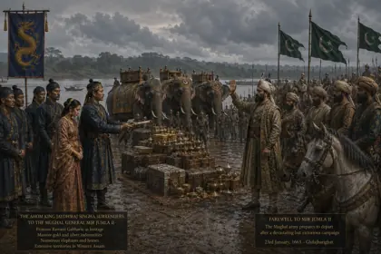

ৰমণী গাভৰু
1663 · Princess sent to the Mughals
Sent to the Mughal court under the 1663 Treaty of Ghilajharighat. Sources differ on whether she was Jayadhwaj Singha's daughter or Lachit's niece.
Record confidence: low.
Open interactive profile

1663